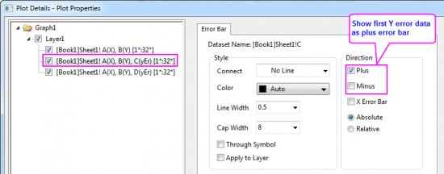
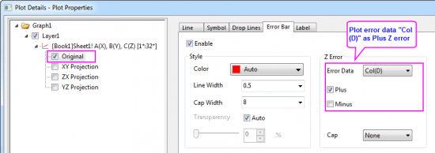
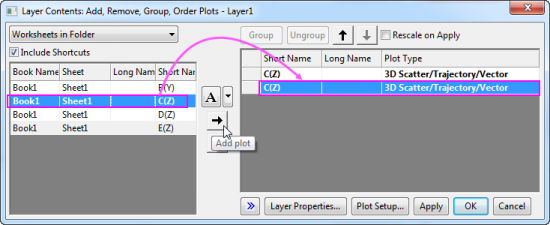
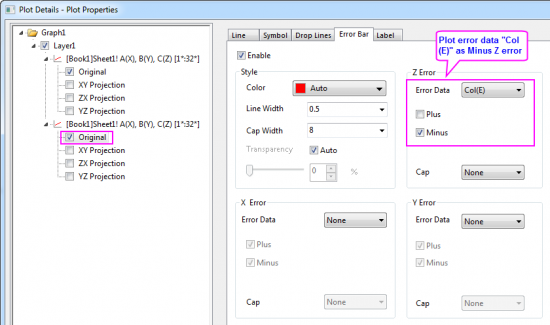

FAQ-889 Wie füge ich asymmetrische Fehlerbalken in meine 2D- und 3D-Diagramme ein?
Asymmetric-ErrorBars
Letztes Update: 13.09.2017
Es kann vorkommen, dass Sie asymmetrische Fehlerbalken in Ihre 2D- und 3D-Diagramme einfügen möchten. Hier bedeuten asymmetrische Fehlerbalken, dass die Plus- und Minus-Fehlerbalken unterschiedliche Längen haben und aus zwei verschiedenen Datensätzen stammen.
Für 2D-Diagramme mit XY(yEr+)(yEr-)-Arbeitsblattdaten können Sie den untenstehenden Schritte befolgen, um asymmetrische Fehlerbalken in Y-Richtung hinzuzufügen:
- Legen Sie die letzten zwei Spalten als Y-Fehler fest. Markieren Sie alle Spalten, um ein Linien-/Punkt-/Punkt-Liniendiagramm zu zeichnen.
- Klicken Sie zum Öffnen des Dialogs Details Zeichnung doppelt auf das Diagramm. Wählen Sie die zweite bzw. die dritte Zeichnung im linken Bedienfeld aus und gehen Sie zur Registerkarte Fehlerbalken im rechten Bedienfeld, um die Richtung zu deaktivieren, die Sie nicht möchten, um nur einseitige Balken für jede Zeichnung zu zeigen.
- 
Im Fall von 3D-Diagrammen mit einem Matrixblatt (mit drei Objekten, von denen die letzten zwei Fehlerdaten sind) oder XYZ(zEr+)(zEr-)-Arbeitsblattdaten können Sie nicht zwei Fehlerdatensätze gleichzeitig in das Diagramm zeichnen wie bei 2D-Diagrammen. Sie können jedoch die folgenden Schritte ausprobieren, um asymmetrische Fehlerbalken in Z-Richtung hinzuzufügen.
Bitte beachten Sie,
- dass Sie mit Matrixdaten nur 3D-Diagramme mit Fehlerbalken in Z-Richtung zeichnen können.
- dass Sie mit Arbeitsblattdaten 3D-Diagramme mit Fehlerbalken in jeder Richtung (X, Y und Z) erstellen können.
|
- Wählen Sie bei markiertem ersten Matrixobjekt oder markierten XYZ(zEr+)-Daten im Menü Zeichnen > 3D: Linie+Symbol: 3D-Punkt + Fehlerbalken, um ein 3D-Punktdiagramm mit symmetrischen Z-Fehlerbalken zu erstellen.
- Klicken Sie zum Öffnen des Dialogs Details Zeichnung doppelt auf das Diagramm. Markieren Sie die Ebene Original, gehen Sie zur Registerkarte Fehlerbalken im rechten Bedienfeld und deaktivieren Sie Minus für Fehler/Z-Fehler.
- 
- Wählen Sie im Menü Grafik: Layerinhalt, um den Dialog Layerinhalt zu öffnen. Fügen Sie erneut das erste Matrixobjekt oder Spalte col(C) als 3D-Punktdiagramm hinzu.
- 
- Klicken Sie zum Öffnen des Dialogs Details Zeichnung doppelt auf die Zeichnung. Wählen Sie die Ebene Original der zweiten Zeichnung, gehen Sie zur Registerkarte Fehlerbalken, wählen Sie Mat(3) bzw. Col(E)("zEr-"-Daten in der vierten Spalte) als Fehlerdaten und deaktivieren Sie Plus für Fehler/Z-Fehler.
- 
- Da wir das gleiche Matrixobjekt/die gleichen XYZ-DAten als 3D-Punktdiagramm zweimal in denselben Diagrammlayer gezeichnet haben, müssen Sie vielleicht einige Einstellungen vornehmen, damit diese zwei Zeichnungen sich vollständig überlappen, so dass es aussieht, als wäre es nur eine Zeichnung.
Schlüsselwörter:asymmetrischer Fehler, Fehlerbalken, Plusfehler, Minusfehler